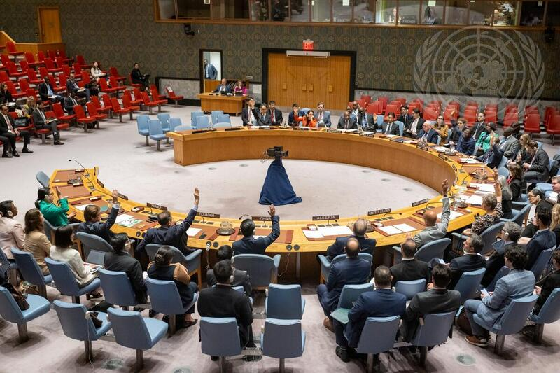
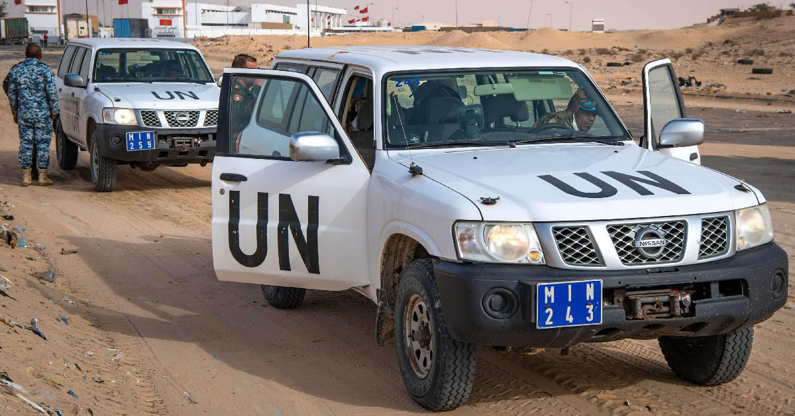

ماذا يحدث قبل 31 أكتوبر؟

بعثة الأمم المتحدة لتنظيم الاستفتاء في الصحراء الغربية، أنشأها مجلس الأمن في أبريل 1991.
مراقبة وقف إطلاق النار
تنظيم استفتاء لتقرير المصير، ولم يُنظَّم حتى اليوم
في السنوات الأخيرة يجدّد المجلس ولاية البعثة مرة كل عام في أكتوبر، وهذه المرة يأتي التصويت وسط خلاف حول مستقبل التسوية السياسية.
مشروع قرار أمريكي متداول في مجلس الأمن يقترح:
تغيير اسم بعثة مينورسو
إنهاء مهامها التقليدية لحفظ السلام تدريجياً
تكريس الحكم الذاتي تحت السيادة المغربية أساساً للتسوية
رفضت جبهة البوليساري المسودة، محذّرة من الانسحاب من العملية السياسية إذا اعتُمدت دون تعديلات جوهرية.
مسودة قيد النقاش، وقد يتغيّر نصّها قبل التصويت.
يقترح الحكم الذاتي تحت سيادته أساساً للحل (مبادرة 2007)
تتمسك باستفتاء لتقرير المصير، وترفض المسودة الحالية
تدعم حق تقرير المصير للشعب الصحراوي
تلتزم الحياد الإيجابي في النزاع
اعتماد المسودة كما هيتجديد الولاية مع تغيير اسم البعثة ومهامها
اعتمادها بعد تعديلاتصيغة توافقية تراعي اعتراضات بعض الأطراف
تمديد تقني قصيرإبقاء البعثة كما هي مؤقتاً لإتاحة وقت للتفاوض
هذه احتمالات ممكنة وليست توقعات، والقرار النهائي بيد أعضاء مجلس الأمن.
تابعوا نتيجة التصويت وتداعياته
في موجزنا القادم